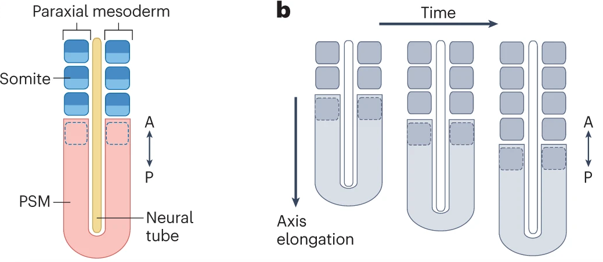

7 Clock-and-wavefront patterning
7.1 Goal of the tutorial:
In this tutorial you will look at a new mechanism for gradient formation and patterning, different from what we have seen in previous practicals. We will study the so-called clock-and-wavefront model, in which the patterning stems from oscillations in gene expression and gene products, and results in a regularly striped segmentation pattern in a growing tissue. Note that as compared to the Drosophila French Flag type case (WC04), this is thought to be the evolutionary ancestral model of segmenting animal body axes.

7.2 The model system
The clock-and-wavefront model describes somitogenesis, a process occurring early in embryo development to form somites along the anterior-posterior (head-to-tail) axis of vertebrates. Somites are a precursor tissue for vertebrae (and other tissues) that will form later in development. Somites are formed from the pre-somitic mesoderm, that extends on the posterior end of the embryo by growth, while the somites bud off periodically at the anterior end. This dynamic developmental process is in the order of a couple of weeks (in humans).
Key players regulating somitogenesis are the protein FGF, and many genes and gene products that have an oscillatory behavior that will determine cell fate. However, for this tutorial, we simplify this oscillatory network to a single pair of gene mRNA and product, denoted with \(m\) and \(p\) for short.

7.3 Programming with classes
In this practical we are going to make a more complex model with a tissue made up of multiple cells, and each cell having its own concentrations of FGF, \(m\) and \(p\). We are going to use Classes in our code. You have been using Classes already: the data types such as int, str and bool have their own class; moreover the str class has many methods (=functions working on that class) defined, such as "hello world".upper(). It is also possible to create custom classes, which is how we will model our genes, cells, and tissue today. With classes, you can easily make objects (an instance of a class), which is part of the object-oriented programming paradigm.
Today, we are going to use classes for the different levels of our model: 1) tissue, 2) cell, 3) \(m\) & \(p\) clock and 4) the plotting. By using classes, we can separate things that happen on a tissue/cellular/clock scale, and separate the model from the visualization of it. You will first work with 1 & 2 & 4, then 3 on its own. At the end you will combine the four into one model, to study somitogenesis.
Important concepts when working with classes are
- Class versus instance
- Defining the
__init__method and other methods - Class attributes and using the keyword
self
This practical should be doable without an extensive knowledge of classes as we provide plenty of examples to copy-paste and run. If you are curious and want to understand better how classes work we recommend you to read this online tutorial
7.4 Questions
Exercise 7.1 (Biology - An alternative gradient forming mechanism) In practical WC04-Gradients and segments we study how gradients can be created through local production, diffusion and decay. However, other mechanisms for gradient formation are possible, such as cell lineage transport. Important for this mechanism is that the expression of the molecule forming a gradient is constraint spatially. In our model of somitogenesis, the rightmost/posterior cell produces FGF. This cell grows, and upon division the daughter cells inherit FGF from their mother cell. Note that only the mesoderm cell divides.
Open the code of the model for the FGF gradient (WC06_fgf-gradient-growth-START.py). First study the code to see how it uses Classes, how they are initialized, and attributes they have.
Run the model and play with it by varying the decay rate of FGF and the division rate of the cells.
How does this affect the gradient? What happens if divisions are only allowed during the first half of the simulation (put divisiontime to 0.5 instead of 1)?
Exercise 7.2 (Mathematics) Now, let’s look at the other half of the clock and wavefront model: the clock part. In WC06_clock.py we implemented one of the first models for the somitogenesis oscillator Lewis (2003) which models a gene that codes for an mRNA (\(m\)) translated into a protein (\(p\)) that acts as a repressive transcription factor repressing its own promoter. In class we discussed how negative feedbacks, delays and non-linearity are important for oscillations. Examine the code to find the differential equations governing this oscillator, and determine the negative feedback, delay and non-linearities in them.
Exercise 7.3 (Biology) Play with the parameters of the model. You can see the output of each simulation as a .png image in WC06_Pattern_formation_III/output.
How does the delay (\(\tau\)) affect oscillations?
Exercise 7.4 (Algorithmic thinking) In the file WC06_rolling_clock.py there is a different implementation of the clock. Compare the two clock models and find out how they differ. Ignore the new functions __copy__ and set_tau in this comparison. Hint: Some differences become clearer when you run the code too.
What benefits does WC06_clock.py have over WC06_rolling_clock.py and vice versa?
Exercise 7.5 (Programming) Now, the fun part starts: we will study the combination of the clock and FGF wavefront into a single model (!!!).
Read and interpret existing code: Read the code of WC06_clock_and_FGFgradient.py, see where the clock and the FGF models are, how they are coupled. Next, identify the assumptions of this model implementation by answering the following questions:
Each cell has its own clock. What clock states is the tissue initialized with? And, what clock states do newly divided cells get?
The FGF wavefront affects \(\tau\): what function is used for that? How do you expect the FGF wavefront to affect the cells’ clocks?
Does growth affect the clock state?
What is your opinion on the assumptions discussed in the three questions? How do you think they impact the observed patterning?
Exercise 7.6 (Biology) Describe how the model behaves and why. Reverse the effect of FGF and see how that affects the patterning? Does the model produces stable somites?
Exercise 7.7 (Biology & Programming) The oscillations slow down, yet they persist… Somitogenesis requires stable somites, indicating something is still missing in the model. That is a means to transform the temporal oscillations in the right-most end of the tissue (posterior) into a spatial pattern of cells at the left (anterior end). In the French Flag morphogen gradient lecture we discussed that memory mechanisms are important to stabilize spatial patterns. Particularly important when the start up signal that broke the symmetry and initialized patterning is gone. It turns out that such a memorization/stabilization mechanism is also essential to convert oscillations to stripes (somites!).
- In
WC06_clock_and_FGFgradient_memory.pywe added an extra ‘memory’ molecule \(M\) as a new attribute to the ClassCell, which value is inherited from the mother cell upon division. The code already includes the visualization of \(M\).
Write your own code to update \(M\) inside the function run_clocks in the class Tissue. Remember that memory requires bistability, which can be achieved if the memory molecule \(M\) has a non-linear saturating positive feedback on itself. What happens when initializing \(M\) with different values (try low and high values)?
- Thus, we need to make \(M\) dependent on the clock. To achieve this, we can start with low values of \(M\) that prevent autoactivation, and then have \(M\) activated by either \(p\) (part of the clock) or \(M\) itself using the following function: \[\frac{dM}{dt}=c\max\left(\frac{p^4}{h_p^4+p^4}, \frac{M^4}{h_M^4+M^4}\right)-\delta M.\]
What happens now?
Since oscillations occur in the PSM and stripe formation occurs only more anteriorly we should constrain memorization to occur only below a certain \(FGF\) value. Implement this in the code. Did this help?
So in addition to have memorization occur only below a certain \(FGF\) value it should also occur above another, lower \(FGF\) value, constraining it to occur in a limited temporal window that enables cells passing through there with a high \(p\) state to induce a high \(M\) state while cells passing through with a low \(p\) state to not induce a high \(M\) state. Implement this and see if you get stable somite formation. What would be another way of achieving this?
Exercise 7.8 (Biology) Both zebrafish and mice are common model organisms, so we know a lot about the biological parameters of their somitogenesis. See the following list:
| Parameter | Zebrafish | Reference | Mouse | Reference |
|---|---|---|---|---|
| Duration of somitogenesis | 18 h | Stickney et al. (2000) | 5 days | Saga (2012) |
| Number of somites | ~30 | Stickney et al. (2000) | 65 | Tam (1981) |
| Somite size | 50 \(\mu\) / 30 \(\mu\) | Ishimatsu et al. (2018) Stickney et al. (2000) | 120 \(\mu\) | Tam (1981) |
| Cells per somite | ~5 cell in diameter | Stickney et al. (2000) | 5-11 (estimated from total cell size in 3D, ranging 1 order of magnitude) | Tam (1981) |
| Clock period | 25 min /30 min | Ishimatsu et al. (2018) / Carraco et al. (2022) / Tomka et al. (2018) | 2-3 h | Carraco et al. (2022) |
From these parameters, you can derive a number of desired model inputs/outcomes:
- The total size of the tissue at the end of somitogenesis
- The size of a cell
- Speed of division
Use the model and try to find suitable model parameters to recreate the development of both zebrafish and mice: is this model able to describe both of these processes? I.e., is this model able to deal with the scale differences between zebrafish and mice?
A couple of notes:
- You don’t have to exactly recreate the biological parameter with 100% precision, except for the number of segments/somites, although it can be a fun challenge to get a complete match.
- You might want to adapt your plotting timestep to have sufficient but not too many plot updates in one simulation.
- You can test the clock parameters separately with the
clock.py/rolling_clock.pyscript. Don’t forget that FGF has an effect on \(\tau\) !
Exercise 7.9 (Questions for master students) The model currently has a number of assumptions that we can question. Feel free to explore any of these further open questions and study how it effects the outcome of the model:
- What if the relationship between FGF and \(\tau\) is shaped differently? For instance, if the clock runs faster on the left/anterior than on the right/posterior?
- What if the clock state of a daughter cell is started fresh rather than being a copy from the mother cell?
- What if the clock \(m\) and \(p\) are diluted by growth?
- What if \(\tau\) is unaffected by FGF: can we still get somites fixed in place?
7.5 Recommended reading material:
If you want to know more about somitogenesis and how it has been modeled, have a look at the following papers (after the practical :): Lewis (2003), Hester (2012), Herrgen et al. (2010), Soroldoni et al. (2014), Sonnen et al. (2018), Bulusu et al. (2017), Oostrom et al. (2025). ——————————————————————————————————————